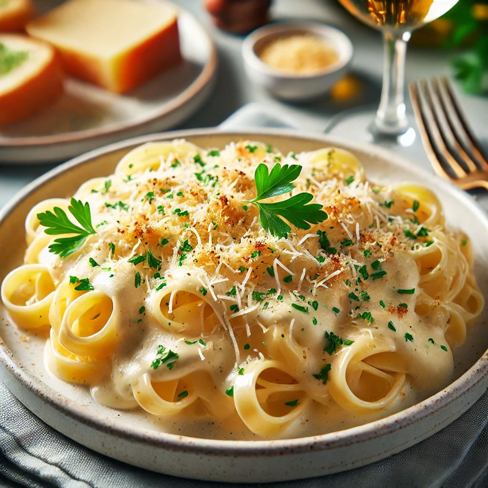
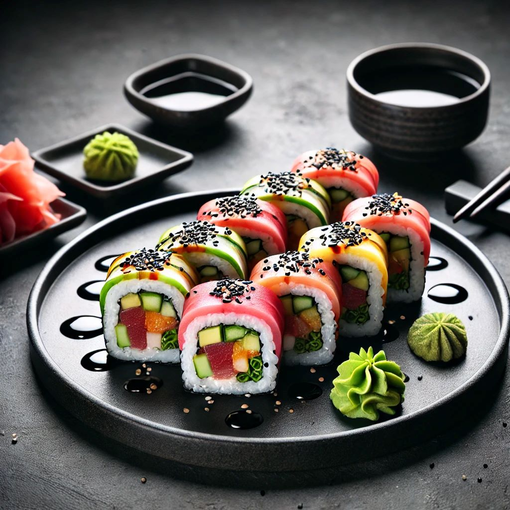
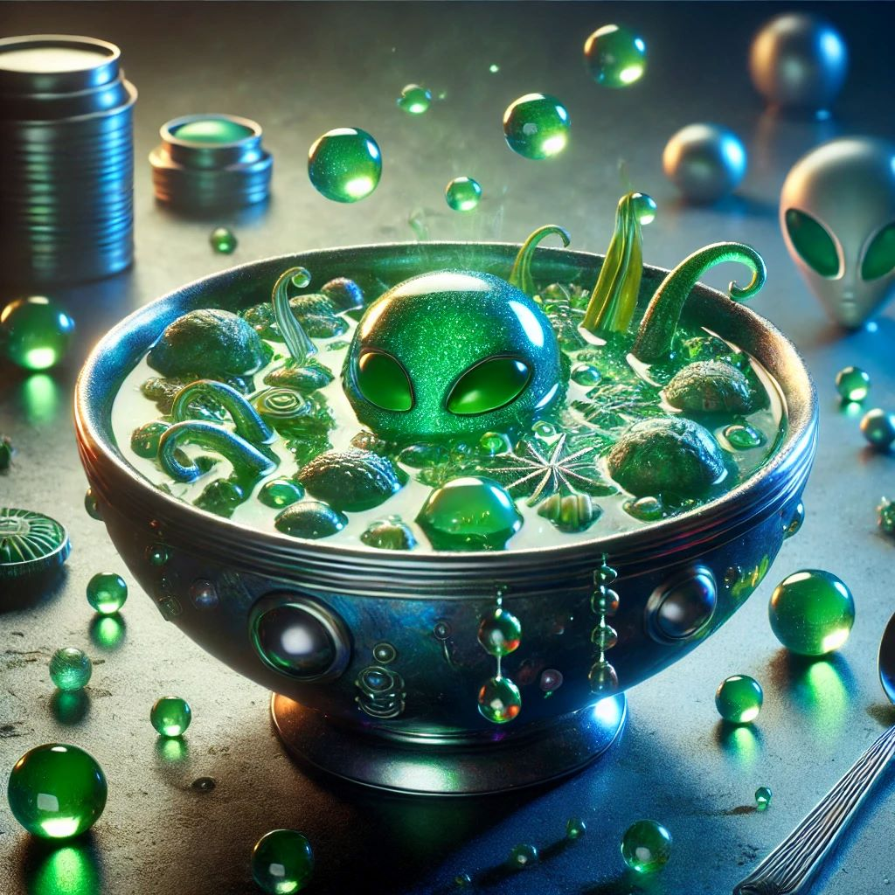

Daily Recipes
Today's 3 recipes

Four Cheese Pasta

Tango Roll

Zlorpian Stew
Why Use Our Tracker?
| When you use Bryson's Nutrition Tracker, you are able to keep track of your macros all in one convienint place. And this can be even more accurate when paired with a basic food scale. |